Principles
of Unit Testing
Software is like…
…insanely synchronized North Korean children
Principle 1
Context
Make clear what your unit is
Context
Case Studies
Traditional types of testing
- Unit
- Integration
- Functional
- Acceptance
Principle 2
Interface
Figure out how to access and observe the unit
Getting a unit
- Constructor
- Global
- Factory
- Vivification™
Getting a unit
var RubberDuck = function (name) {
this._name = name;
this.squawk = function () {...};
this.swim = function () {...};
};
/* constructor */
var instance = new RubberDuck('Ducky');
Getting a unit
var Utilities = {
encodeUri = function (uri) {...};
roundUp = function (number) {...};
quote = function (string) {...};
};
/* global */
Utilities;
Getting a unit
/* vivification */
jQuery('#my-awesome-list').carousel();
/* another example */
var myList = document.querySelector('#my-awesome-list');
Carousel.create(myList);
Fixtures
Create test environment
- HTML structure
- Mocks, stubs
- Core libraries and CSS
Exercise
Get an instance of
- Bootstrap Carousel - jsbin.com/hicuri/1/edit
- Dijit Color Palette (programatically or declaratively) - jsbin.com/werew/3/edit
Hints
- getbootstrap.com/javascript/#carousel
- dojotoolkit.org/reference-guide/1.10/dijit/ColorPalette.html
- Replace "..." with valid image urls
- $('selector-for-carousel-root-element')
- registry.byId('id-of-palette-root-element')
- Inline script for dojoConfig is required in the HTML head, for declarative setup of color palette
Now that I have the unit, what can I do with it?
B/W Box Testing
- Black box: Don't care about internal implementation. Feed input and observe output.
- White box: Look at implementation of unit. Consider internal execution paths.
When white box testing is important
- Low-level software
- Critical software
- Dumb programmers
function add(number1, number2) {
if (number1 === 90210) {
return -1; // That is my lucky number! :) LOL FTW
} else {
return number1 + number2;
}
}Exercise
What can you do with instance? What can you observe?
var CountrySelector = function () {
var default = 'Canada',
submitButton = document.querySelector('#submit-country');
var abbreviate = function (name) {
return name.substring(0, 3);
};
this.countryLength = 2;
this.getCountryCode = function (name) {
return (name === 'Canada') ? 'CA' : null;
};
submitButton.addEventListener('click', function () {
// make AJAX call to server
submitButton.style.top = "0px"; // move box to top
submitButton.style.color = "green"; // and turn it green
});
};
var instance = new CountrySelector();
Answer
var CountrySelector = function () {
var default = 'Canada',
submitButton = document.querySelector('#submit-country');
var abbreviate = function (name) {
return name.substring(0, 3);
};
/*** Public properties and functions ***/
this.countryLength = 2;
this.getCountryCode = function (name) {
return (name === 'Canada') ? 'CA' : null;
};
/*** Event handlers ***/
submitButton.addEventListener('click', function () {
/*** Effects ***/
// make AJAX call to server
submitButton.style.top = "0px"; // move box to top
submitButton.style.color = "green"; // and turn it green
});
};
var instance = new CountrySelector();
instance.countryLength; // 2
instance.getCountryCode('Canada'); // 'CA'
// clicking submit button makes a server call and moves the button
The Black Box
Interface
- Public functions
- Events
- Effects
Pre-Principle
Concern
Build a component with testing in mind, not an afterthought
Principle 3
Isolation
Eliminate or control external influences
What to control
Things that…
- make the test fail when the unit is correct
- we don't trust
- are unpredictable
- are time-sensitive
- have unwanted side-effects
- have states that are hard to trigger
What to control
- Databases and other persistent data sources
- User input and device output
- Networking
- Timers
- Dodgy code
Exercise
Identify the things that should be controlled for
Modernizr CSS prefixes
github.com/Modernizr/Modernizr/blob/master/src/cssomPrefixes.jsTypeahead Dropdown
github.com/twitter/typeahead.js/blob/master/src/typeahead/dropdown.jsSinon Stubs
- Prevent real object/function from being used
- Force external dependencies to behave in a certain way
// Assume unit calls Dropdown.open()
// Override Dropdown.open() and do nothing when called
sinon.stub(Dropdown, 'open');
// Return false when called
sinon.stub(Dropdown, 'open').returns(false);
// Throw an exception when called
sinon.stub(Dropdown, 'open').throws();
Principle 4
Independence
Restrict interference between tests
Exercise
What's wrong here?
var hippo = new Hippo();
test('initalize makes hippo ready for action', function () {
hippo.initalize();
strictEqual(hippo.isReadyForAction(), true);
});
test('rest relaxes hippo', function () {
hippo.rest();
strictEqual(hippo.isRelaxed(), true);
});
test('yawn makes hippo sluggish', function () {
hippo.yawn();
strictEqual(hippo.isSluggish(), true);
});
Exercise
What's wrong here? (2)
var favouriteFoods = ['kale', 'poutine'];
test('eatOne removes a food item', function () {
var hippo = new Hippo();
hippo.eatOne(favouriteFoods);
strictEqual(favouriteFoods.length, 1);
});
test('eatAll removes all food items', function () {
var hippo = new Hippo();
hippo.eatAll(favouriteFoods);
strictEqual(favouriteFoods.length, 0);
});
Exercise
What's wrong here? (3)
test('draw appends a  on the specified element', function () {
var hippo = new Hippo();
hippo.draw(document.body);
// look for img tag on document.body
var imgElement = document.body.querySelectorAll('img');
strictEqual(imgElement.length, 1);
});
on the specified element', function () {
var hippo = new Hippo();
hippo.draw(document.body);
// look for img tag on document.body
var imgElement = document.body.querySelectorAll('img');
strictEqual(imgElement.length, 1);
});
Exercise
What's wrong here? (4)
test('dance creates shiny confetti and makes #fruity purple', function () {
var hippo = new Hippo(),
testElement = document.createElement('div');
// arrange
testElement.id = 'fruity';
document.body.appendChild(testElement);
// act
var result = hippo.dance();
var pageColour = window.getComputedStyle(testElement)
.getPropertyValue('color');
document.body.removeChild(testElement);
// assert
strictEqual(result, 'confetti');
strictEqual(pageColour, 'purple');
});
Independence
Tests should…
- Run in any order
- Run in parallel
- Run repeatedly with same results (indempotence)
- Not make permanent global changes
- Test one thing at a time
Principle 5
Adequacy
Create practical test cases
Test Strategies
Subject Selection
- Test all interface functions, events, etc
- Do not test external dependencies
- Do not test underlying framework
- Do not test preconditions (e.g. null checks)
Test Strategies
Case Selection
- Typical
- Extreme
- Maximum variation
- High business risk
- Failure
QUnit Cheat Sheet
module('hippoTestSuite', {
setup: function () { // common setup actions... },
teardown: function () { // common teardown actions... }
});
test('Description of test', function () {
// arrange
// act
// assert
strictEqual(expected, actualResult, 'optional error message');
});
test('Description of another test', function () {
// arrange, act, assert
strictEqual(expected, actualResult, 'optional error message');
});
Exercise
Write test cases for at least one of these
QUnit template - jsbin.com/xomiwi/1/edit
Test Strategies
Basis path testing
var humanizeDates = function (date1, date2) {
if (date1 < date2) {
if (date2 - date1 > 500) {
return 'very long time ago';
}
return 'long time ago';
} else if (date1 > date2) {
if (date1 - date2 > 500) {
return 'very far in future';
}
return 'in future';
}
return 'same time';
};
Statement coverage = % statements executed in tests
Test Strategies
Basis path testing
Test Strategies
Boundary Value Analysis
Equivalent partition = range of values that should give the same result
Boundary value = value that separates adjacent equivalent partitions
Test Strategies
Boundary Value Analysis
moment(someDate).isAfter(anotherDate)
eq partition 1 eq partition 2
|--------------------------|---------------------------|
0 now max Date
Testing Events
test('bump causes hippo to trigger a burp event', function () {
var burpSpy = sinon.spy();
// arrange
var hippo = new Hippo();
$('body').on('burp', burpSpy);
// act
hippo.bump();
// assert
strictEqual(burpSpy.calledOnce, true);
});
Exercises
- Verify custom width option works for YUI Slider - jsbin.com/mizaq/1/edit
- Verify a change event is triggered when jQuery.progressbar() changes value - jsbin.com/xomiwi/2/edit
- Verify that nativeTemplateEngine.renderTemplateSource() from knockout.js calls ko.utils.parseHtmlFragment() on IE<9 - jsbin.com/siyas/1/edit
Principle 6
Clarity
Create understandable tests
Unclear structure
test('computeCommonFactor returns -1', function () {
var l = new Factor(),
div = document.createElement('div');
sinon.stub(someMathLib, 'factorize').returns(2);
div.id = 'factor';
l.init(div);
strictEqual(l.computeCommonFactor(-123), -1);
l.destroy();
someMathLib.factorize.restore();
});
Clear structure
test('computeCommonFactor returns -1 when an invalid argument is given', function () {
var factor = new Factor(),
fixture = document.createElement('div'),
invalidArgument = -123,
result;
// arrange
sinon.stub(someMathLib, 'factorize').returns(2);
fixture.id = 'factor';
factor.init(fixture);
// act
result = factor.computeCommonFactor(invalidArgument);
factor.destroy();
someMathLib.factorize.restore();
// assert
strictEqual(result, -1);
});
Clear structure
- Subject, condition, expected result (for test names)
- Arrange, act, assert (for statements)
- Test one thing at a time
Low readability
test('hide fires a hidden event', function () {
var accordionElement = document.createElement('ul'),
accordionTab1 = document.createElement('li'),
accordionTab2 = document.createElement('li'),
listener = sinon.spy();
// arrange
sinon.stub(someLib, 'accordify', function (options) {
if (options.foo === true) {
return {
goo: function () { return true; },
hoo: function () { return ''; }
};
}
return {
goo: function () {},
hoo: function () {}
};
});
accordionElement.classList.add('myAccordion');
accordionTab1.classList.add('tab');
accordionTab2.classList.add('tab');
accordionElement.appendChild(accordionTab1);
accordionElement.appendChild(accordionTab2);
qunitFixture.appendChild(accordionElement);
accordion = jQuery('.myAccordion').accordion(); // init
jQuery.on('hidden', listener);
// act
accordion.hide();
// assert
ok(listener.calledOnce);
// cleanup
jQuery.off('hidden', listener);
accordion.destroy();
someLib.accordify.restore();
});
High readability
var standardAccordion;
module('accordion', {
setup: function () {
setupAccordifyStub();
standardAccordion = createAccordion();
},
teardown: function () {
standardAccordion.destroy();
someLib.accordify.restore();
}
});
test('hide fires a hidden event', function () {
var hiddenEventListener = sinon.spy();
// arrange
jQuery.on('hidden', hiddenEventListener);
// act
standardAccordion.hide();
// assert
ok(hiddenEventListener.calledOnce);
// cleanup
jQuery.off('hidden', hiddenEventListener);
});
Better readability
- Less boilerplate
- Meaningful mock names
- No obsolete tests
Exercise
Critique unit test for jQuery UI accordion - https://github.com/jquery/jquery-ui/blob/master/tests/unit/accordion/accordion_events.js
Principle 7
スピード！スピード！スピード！
( Speed! )
Reduce barriers to working with tests
Fast and painless
- Avoid polling and delays
- Make test suites easy to run
- Fail fast and clear
Summary
- Context
- Interface
- Isolation
- Independence
- Adequacy
- Clarity
- Speed
Insanely Synchronous Children In An Impressive Ceremony
Credits
Images
- Gamestarturn, https://commons.wikimedia.org/wiki/File:KES-400A_KEM-407AAA_Test_fixture.JPG, CC Attribution-Share Alike 4.0 International;
- TW Hoon, "testing-pyramid" and "basis-path-testing", CC Attribution 4.0 International;

This work is licensed under a Creative Commons Attribution 4.0 International License.
Suggestions or errata? Contact TW Hoon at GitHub (username: hoontw).